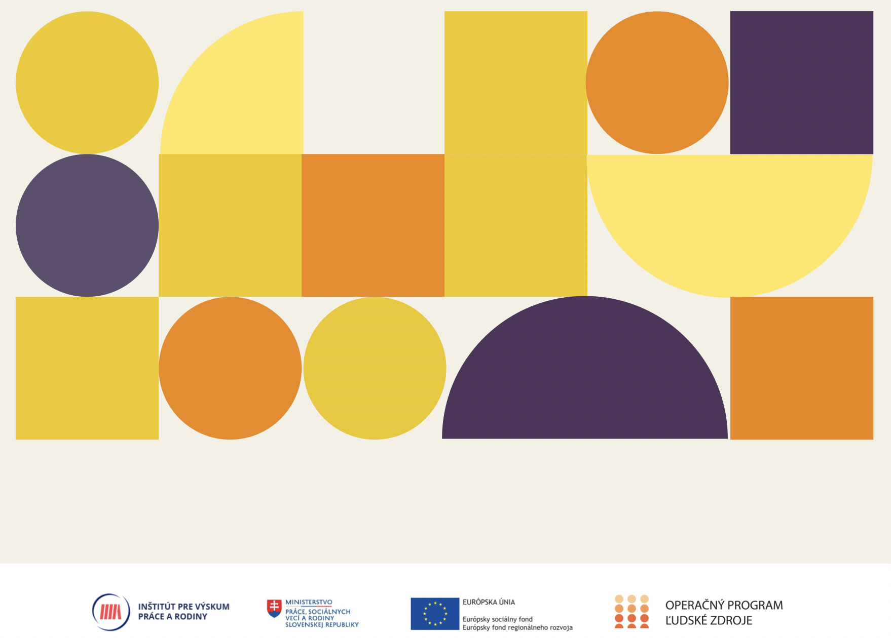

Sexuálne obťažovanie na vysokých školách (správa z výskumu)
Bratislava 2021
Inštitút pre výskum práce a rodiny vydal túto správu ako súčasť výstupov národného projektu Prevencia a eliminácia rodovej diskriminácie OP ĽZ NP 2018/4.1.2/01., ktorý sa realizuje vďaka podpore z Európskeho sociálneho fondu a Európskeho fondu regionálneho rozvoja v rámci Operačného programu Ľudské zdroje www.esf.gov.sk

Autori: Veronika Valkovičová, Andrej Kuruc, Ivan Ropovik, Slávka Karkošková
Vydavateľ: Inštitút pre výskum práce a rodiny, Bratislava
Rok vydania: 2021
Jazyková korektúra: Sára Činčurová
Externá spolupráca: Natália Heriban
ISBN: 978-80-7138-175-4